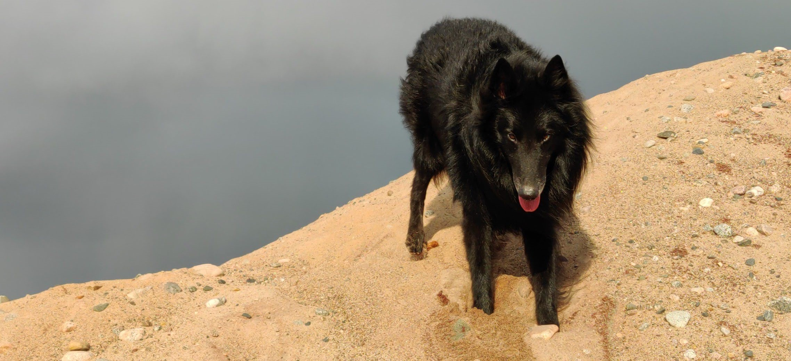
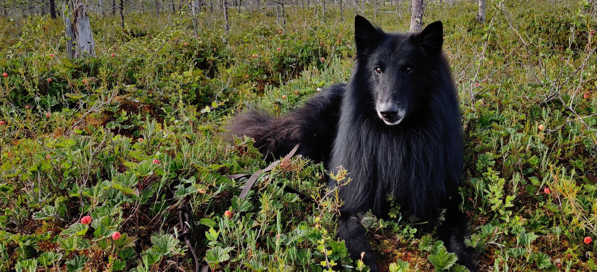
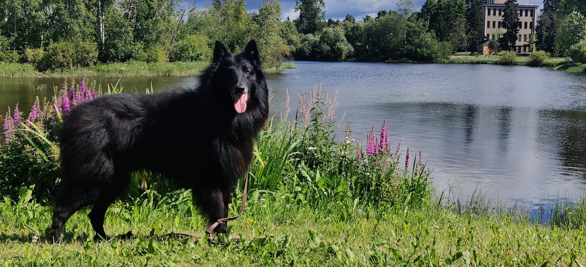

Perustiedot
- Rotu: Belgianpaimenkoira Groenendael
- Syntymäaika: 18.11.2015
- Ikä: 7v
- Syntymäpaikka: Norja
- Sukupuoli: Uros
- Lempinimet: Coco, Copo, Cosmonautti, Kopotti, Kokotti, Mr.Kokkelson, Cos, Takkupylly, Herkkupylly, Töhötti
Harrastukset
Lintubongaus, kalastus, haliminen ja varjona kulkeminen
Saavutukset
Matkustanut lentokoneessa, junassa, linja-autossa, veneessä ja autossa
Frisbeen nappaaminen ilmasta
Luonne
Pentuna Cosmo oli todella arka ja epävarma. Iän ja treenaamisen myötä se on reipastunut todella paljon. Tuntemattomiin se ei
vieläkään luota helposti, mutta kokoajan siinäkin tehdään edistymistä.
Koostaan huolimatta, Cosmo on mahdoton sylivauva ja tykkää halimisesta. Cosmo on todella energinen ja nokkela.
Se oppii uudet temput hyvin nopeasti, mutta keskittymiskyky on melkein olematon - melkein voisi kuvailla ADHD:ksi.
Cosmo on todella perso ruuan ja herkkujen perään. Nuorempana se kävi usein leipävarkaissa, jos silmä sattui välttämään sopivasti.
Viime kesänä Cosmo aloitti uutena harrastuksena lintubongauksen. Lenkkien kohokohta onkin viereisessä puistossa sorsien puuhastelujen katselu.


